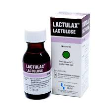

Konstipasi atau sembelit
Konstipasi atau sembelit merupakan terhambatnya defekasi dari kebiasaan normal dimana terjadi defekasi yang jarang, jumlah feses yang kurang, konsistensinya keras dan kering. Faktor risiko umum untuk konstipasi adalah kurangnya aktivitas fisik (termasuk berjalan biasa) dan dikaitkan dengan kurangnya perhatian diri terhadap gejala konstipasi pada permulaan penyakit. Konstipasi kronis yang berat dapat menyebabkan menurunnya kualitas hidup yang berhubungan dengan kesehatan. Menurunnya motilitas usus adalah salah satu mekanisme patofisiologi pada konstipasi kronis yang berat.
- Gejala : Gejala konstipasi yang biasa dikeluhkan oleh pasien yaitu tinja yang keras, sulit buang air besar, kembung, perasaan tidak puas setelah buang air besar, dan rasa tidak nyaman pada perut.
- Penyebab : Penyebab tersering konstipasi pada anak adalah menahan buang air besar akibat pengalaman nyeri pada saat buang air besar sebelumnya, biasanya disertai dengan fisura ani (robekan atau belahnya lapisan anus). Kebiasaan menahan tinja (retensi tinja) yang berulang akan meregangkan rektum dan kemudian kolon sigmoid yang akan menampung bolus tinja berikutnya. Selain karena menahan pada saat buang air besar, penyebab lain anak mengalami konstipasi yaitu, karena kurang mengonsumsi makanan yang banyak mengandung serat, kurang cairan, kurang gerak, dan bisa karena penyakit yang lain seperti, kanker rectum dan penyumbatan pada usus. Penyebab konstipasi pada lansia bukan hanya dari penurunan fungsi organ tubuh seperti sistem gastrointestinal tetapi dapat disebabkan oleh beberapa faktor antara lain diet rendah serat, kurang minum, kebiasaan buang air besar yang tidak teratur, kurang olahraga, dan penggunaan obat-obatan.
-
Pengobatan Konvensional

Bisakodil
- Bisacodyl adalah obat yang digunakan untuk mengatasi konstipasi dengan cara merangsang otot-otot usus besar untuk mengeluarkan kotoran.
- Kandungan : Bisacodyl 5 mg
- Dosis : Dewasa dan anak di atas usia 12 tahun : 2-3 tablet per hari. Anak 6-12 tahun : 1 tablet sekali sehari. Anak dibawah 6 tahun, konsultasika terlebih dahulu dengan dokter. Untuk persiapan diagnosti dan sebelum operasi: Penggunaan dikombinasikan dengan suppositoria. Dosis yang dianjurkan untuk org dewasa 2-4 tablet pada malam sebelumnya.
- Indikasi : Paracetamol diketahui dapat bekerja pada pusat pengaturan suhu yang ada di otak untuk menurunkan suhu tubuh saat seseorang sedang mengalami demam. Selain itu, paracetamol juga bisa menghambat pembentukan prostaglandin, yaitu senyawa yang memicu nyeri dan bengkak ketika terjadi kerusakan atau cedera pada jaringan tubuh.
- Kontarindikasi : Pasien dengan Ileus, obstruksi usus, kondisi bedah akut abdomen, apendisitis, penyakit radang usus akut & nyeri perut parah yang berhubungan dengan mual & muntah; dehidrasi parah.
- ESO : Ketidaknyamanan perut & diare. Reaksi anafilaksis, angioedema, hipersensitivitas. Dehidrasi. Pusing, sinkop. Kram perut, sakit perut, mual, muntah, ketidaknyamanan anorectal.
Lactulose
- Laktulosa adalah obat yang digunakan untuk mengatasi konstipasi atau sulit buang air besar. Obat ini bekerja dengan mengalirkan cairan ke usus sehingga membuat tinja menjadi lebih lunak dan mudah untuk dikeluarkan.
- Kandungan : Per 5 mL : Lactulose 3.335 g
- Dosis : Konstipasi khronik : Dosis awal selama 3 hari pertama : Dewasa : 3-9 sendok takar 5 cc, Anak 5-14 tahun : 3 sendok takar 5 cc, Anak 1-5 tahun : 1-2 sendok takar 5 cc, Bayi kuranng dari 1 tahun : 1 sendok takar 5 cc Dosis
- Indikasi : Konstipasi kronik dan Ensefalopati Portal Sistemik
- Kontarindikasi : Galaktosaemia, obstruksi Gastro Intestinal, perforasi pencernaan atau risiko perforasi pencernaan. Pasien dengan diet galaktosa rendah.
- ESO : Penggunaan dalam jangka waktu lama : rasa tidak nyaman pada perut dan lambung, kram lambung, rasa haus, diare, kentut, mual & muntah.
-
Pengobatan Herbal

Lidah Buaya
- Penggunaan tanaman lidah buaya tidak hanya bermanfaat sebagai penutrisi rambut, tetapi juga dapat digunakan untuk mengobati penyakit seperti gangguan pencernaan. Penanganan alternatif konstipasi yaitu dengan menggunakan lidah buaya (Aloe vera). Lidah buaya (Aloe vera) mengandung Aloe-emodin-anthrone yang berikatan dengan glukosa dan berkembang menjadi molekul Barbaloin. Molekul tersebut menyebabkan pelepasan air dan elektrolit ke lumen kolon sehingga absorpsi air dan elektrolit terhambat sehingga feses lebih cair dan volume di dalam rektum bertambah dan memacu tejadinya peristaltik. Mula kerja lidah buaya (Aloe vera) sama dengan laksansia golongan laksatif yaitu 6-12 jam setelah pemberian. Cara mengolah lidah buaya dengan menyiapkan ½ potong lidah buaya, ditambahkan air ½ gelas dan madu 1 sendok makan. Cuci terlebih dahulu lidah buaya sampai bersih dan hilangkan durinya. Lalu cincang dagingnya dan tambahkan air panas serta madu. Aduk lalu disaring, setelah jadi ramuan lidah buaya tersebut dapat dikonsumsi dua kali sehari saat masih hangat.